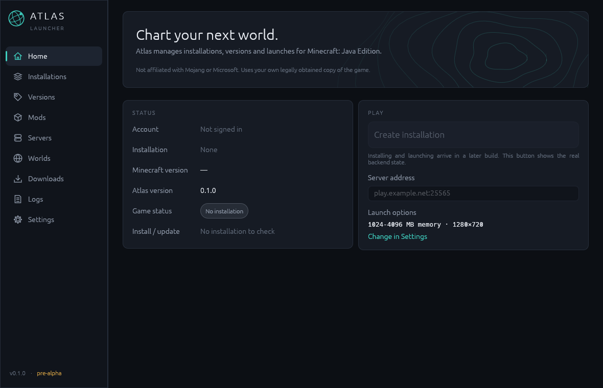
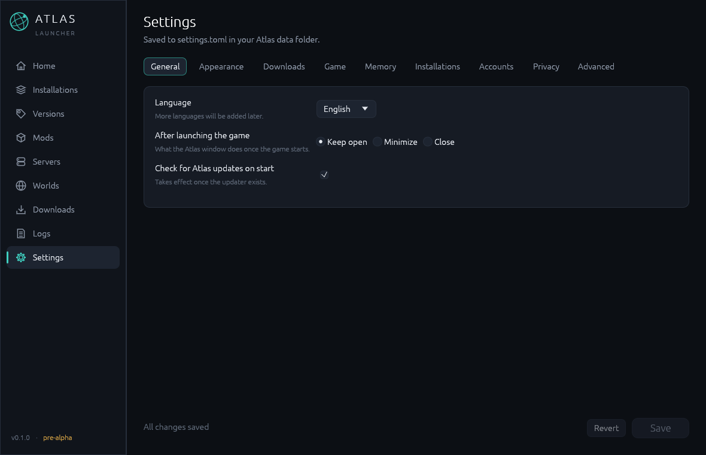
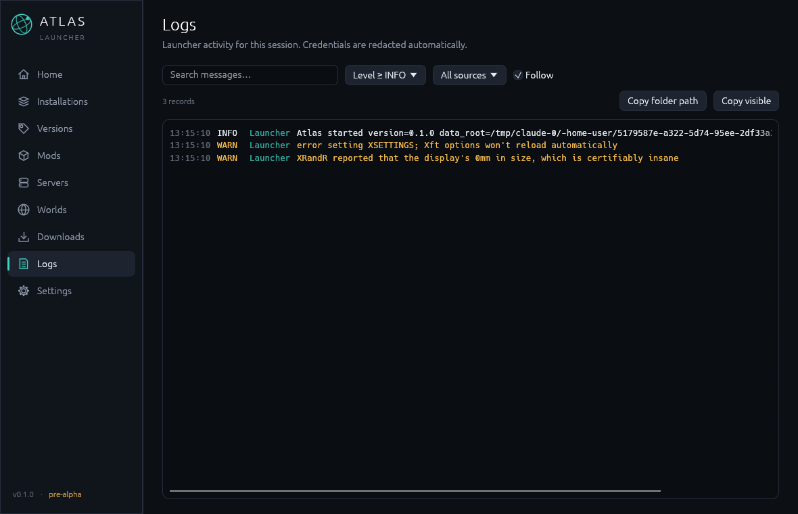

Chart your next world.
Atlas is a fast, open-source launcher for Minecraft: Java Edition, written in Rust. Separate installations, verified downloads and secure sign-in, all in one clean app.
You need your own copy of Minecraft: Java Edition. Atlas includes no Mojang game files.
Why Atlas
A launcher that doesn't get in the way
Native code, a small footprint and a backend that tells you exactly what is happening, without fake progress bars. Features tagged Coming aren't in the app yet.
Separate installations Coming
Give each setup its own version, folder, memory and launch options. Removing one never touches anything else.
Verified downloads Coming
Every file is checked against the official checksum. Interrupted downloads resume, and a failed download can never break an installation.
Secure sign-in Coming
Sign in with Microsoft in your own browser. Atlas never sees your password, and tokens stay in your system's secure credential store.
Clear logs Available
Launcher, game and crash logs in one place, with search and filters. Secrets are always removed from logs.
Command line too Available
Everything the app does, the atlas command can do too, with JSON output for scripts.
Open source Available
MIT licensed and developed in public. No telemetry and no ads.
Preview
Built to feel calm
Real screenshots of the current pre-alpha build.



Roadmap
Where we are
Atlas is built in stages. We only list a feature as available once it actually works.